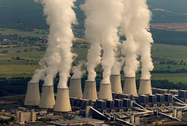

Another climate change milestone accrues, to go with the latest record highs in global temperature, and a new analysis putting recent warming in the context of 2 million years of climate history.
As Randy Olson asserted years ago, could it be that the end of the world as we know it is simply “bo-ho-ho-ring”?
In his note about the new analysis, Leiserowitz included an appeal for the public to weigh in:
Share your thoughts here, as well, of course — with civility.
So what’s to be done about what I once called “global waffling“?
Ask George Marshall, the longtime climate campaigner, student of behavioral and social science and author of the most sobering and essential book on the issue: “Don’t Even Think About It: Why Our Brains Are Wired to Ignore Climate.”

He says the first step is to recognize, even embrace, the essence of how humans work, including the faults. Then new conversations and collaborations can build.
This is in synch with my notion of “Anthropophilia.”
It’s this kind of work that has led me to focus more on fostering traits in society that can boost capacities to innovate, empathize, to devise resilient responses to risks and more — to bend, stretch, reach, teach…